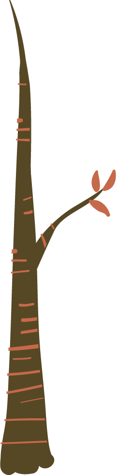
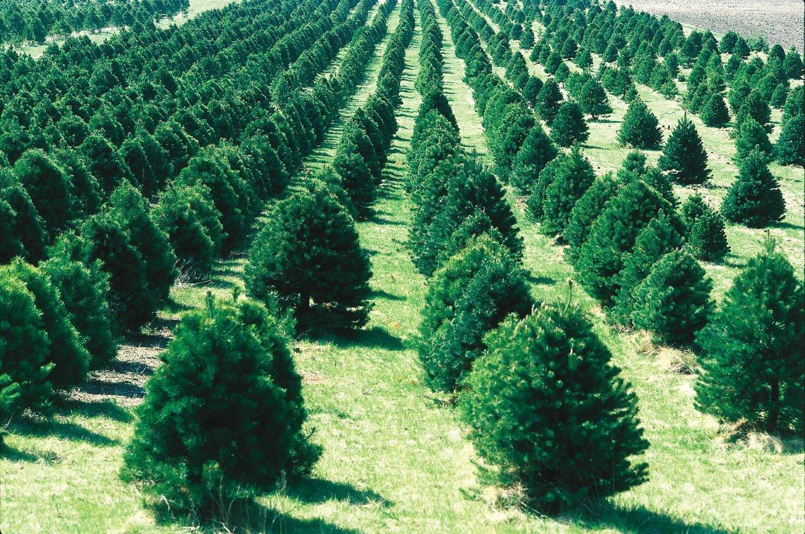
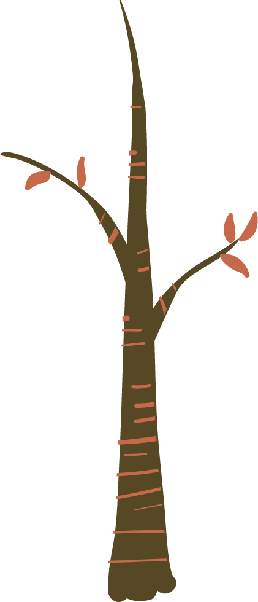
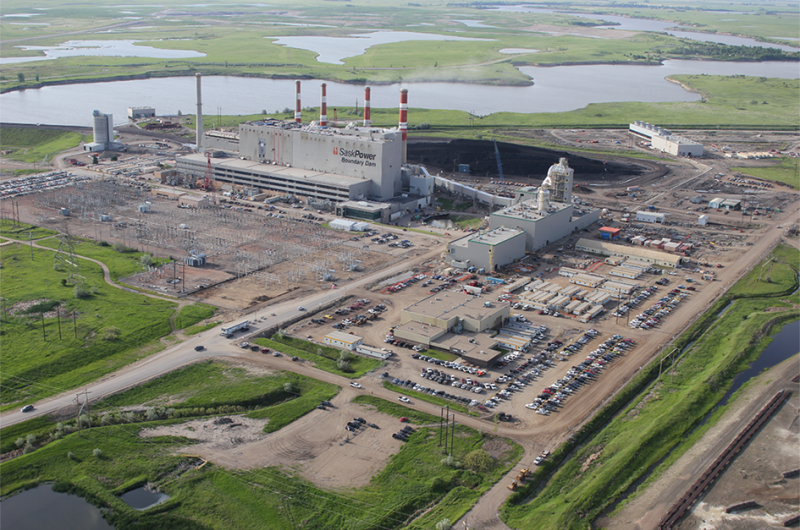
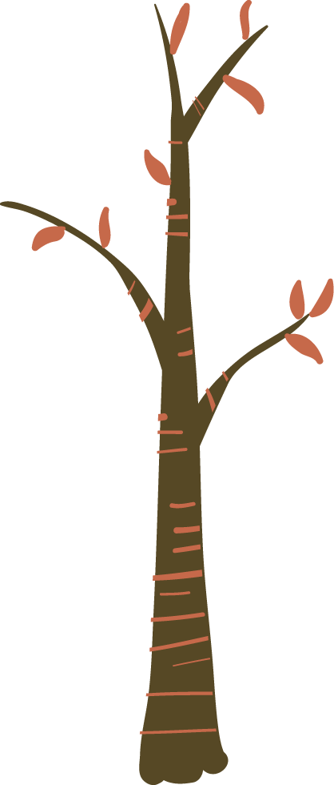
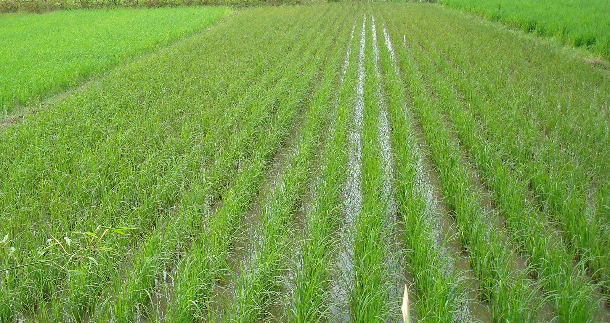
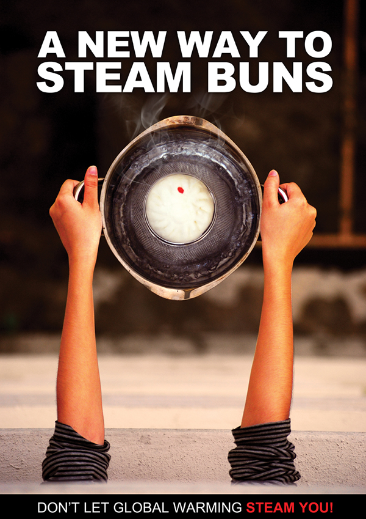

Hi, welcome to Fate of Climate Change. This is a website which can help you get a better understanding of how humans could deal with climate change, and how we could escape from the fate of extinction.
You might think climate change is irreversible at this point. Humans are doomed. But I’m here to tell you, humans still have time, POLITICS is able to save the world.
From denial and inaction just two decades ago, countries now dare to think big. The world is full now of major initiatives.

Many countries, for example, are furiously planting trees.


Carbon capture and storage to take the emissions of fossil fuels is becoming a reality.


Millions of rice farmers have adopted the system of rice intensification which halves the water needed and reduces methane emissions from rice cultivation by up to 50%.

There are seeds of change, lifting ambition, inspiring hope and showing the potential for change on a planetary scale.
But these and many others are, so far, only incremental initiatives, coming far too slowly to even brake the warming.
This website is a game aimed to help people understand the relationship between politics and climate change. Only if the people bring awareness to this cause will politicians start to address the greatest challenge human kind will ever face.
They will see that people are up for the challenge. If they then don’t respond with urgency, we are not just metaphorically in the soup, we may literally be cooked.

Are you ready for the journey to reverse climate change?